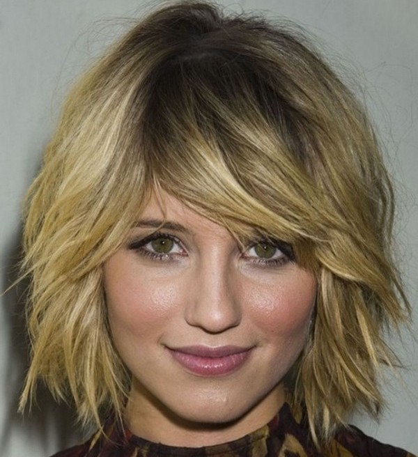
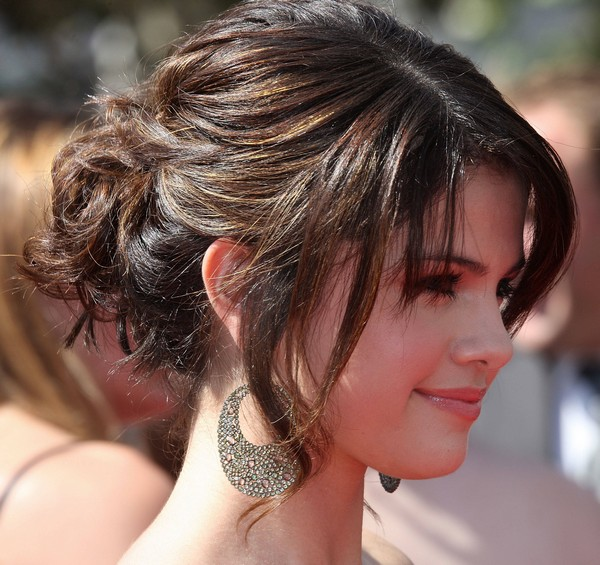
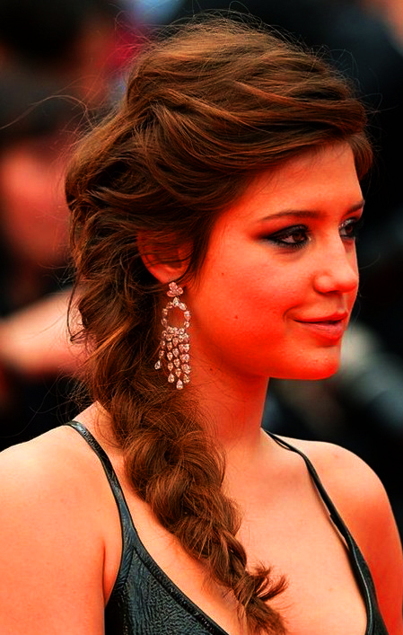
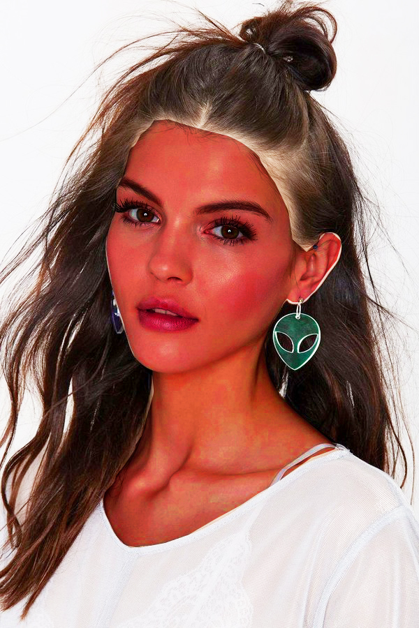

|
Quick and Cute Messy Hairstyles




You can look cute with a short hairstyle, but you can even look cuter with messy hairstyles.
Girls who have thin hair choose this hairstyle because it can make their hair look voluminous.
If you want to be unique from the others then you should try these cute messy hairstyles that we've gathered for you.
After checking out these images, you'll surely think that they are amazing and will look lovely on you.
Select the hairstyle that you desire and try to do it yourself. Be sure to choose the best products for styling.
In order to preserve the look, use a good hair spray.
Want to look hot, stunning and captivating? Well, the secret is just hidden behind the hairstyle that you wear.
Sleek and neat hairstyles are attractive but then wearing shaggy layers and loose waves are the ones that can capture a man's heart.
Why do you think men love your bedhead hair? It's because it can bring out the real beauty in you.
Today, we will share you some amazing messy hairstyle ideas that can make you feel beautiful. |